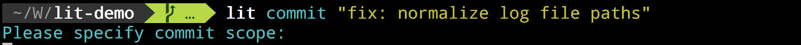
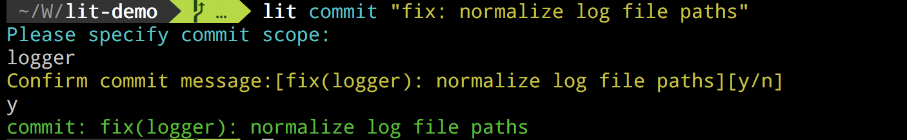
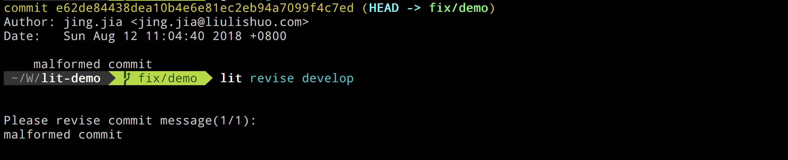
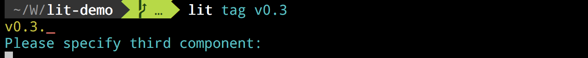
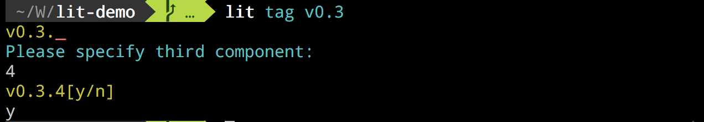

Lit 是流利说专属的代码版本管理客户端。集成了流利说工作流和很多方便的功能，让工程师能更简单地相互合作，构建出易于理解的工作记录。
这份教程将展示 lit 的一些基本操作，用时约16分钟。
Lit 发布在流利说内部的 Homebrew tap 上，安装步骤如下:
/usr/bin/ruby -e "$(curl -fsSL https://raw.githubusercontent.com/Homebrew/install/master/install)"
brew tap lls/lit git@git.llsapp.com:client-infra/homebrew-lit.git && brew install lls/lit/lit
lit --version
如果你的终端输出了类似如下的信息：
这表示 Lit 已经安装完成。
规范的 Commit 信息有助于对代码的静态分析。这里我们引用了 Angular commit message guidelines, 要求每个 commit 信息由类型、影响范围和具体信息组成。
一条合规的 commit 信息看起来像这样：fix(logger): normalize log file paths
这里的类型是fix，影响范围是logger，具体信息是normalize log file paths。
影响范围和具体信息没有固定值，可以是你觉得合适的任何字符串，但 commit 类型必须是这几项预设值之一：feat, fix, test, perf, refactor, docs, ci, build, style, chore
要创建一条新的 commit，在终端中输入
lit commit "fix: normalize log file paths"
Lit 会知道你没有提供影响范围，并提示你补全信息：

在补全影响范围并确认后，Lit 会输出成功创建 commit 的消息

除了最基本的 commit 信息之外，Lit commit 还提供了与 git-commit 类似的 –amend 和 -a 等选项。
流利说采用 Gitlab 来管理代码。通常我们需要往某个分支合入代码时，都需要先将本地分支推到远端，然后打开浏览器，找到对应项目，最后手动提交一个 Merge Request。
Lit 的 mr 命令可以被用来简化这一流程。
要生成一条 MR，我们需要
通过 -j 或 --project 指定，如果没有提供，Lit 会根据当前 Git 目录的 remote config 来猜测可能的值
通过 -z 或 --source-branch 指定，如果没有提供，Lit 会根据当前分支的 remote tracking branch 来猜测可能的值
通过 -b 或 --target-branch 指定。
如果没有提供，在 Android 工程下，Lit 会读取 gradle.properties 的 APP_VERSION_NAME_SUFFIX_TYPE。
当其值为0时，目标分支为develop，为1或2时，目标分支为release
通过 -d 或 --description 指定，默认值为当前分支与目标分支之间的变更记录
通过 -t 或 --title 指定，当当前分支与目标分支之间的变更记录只有一条时，默认值为该变更记录
当你的本地分支落后于远端分支时，可以使用 -rp 来 rebase 并推送到远端分支，或者使用 -fp 来强制覆盖远端分支。
一次最典型的 MR 提交大概会像这样：
lit mr -rpt "awesome mr"
虽然 Lit 提供了格式化 Commit 信息的功能，但这并非强制的要求，你总是可以使用 Git 来创建任何自己认为合适的提交。然而一旦不遵循规范，流利说的很多其他工具（比如变更集分类和覆盖率分析）将无法正确理解这些提交。
为此 Lit 提供了 revise 命令，让工程师在提交 MR 之前有一次检查并修复所有不合规范的 commit。
lit revise develop
在上面这个例子中，修复的目标分支是 develop，lit 会先计算出当前分支和目标分支之间的 merge base，然后梳理所有当前分支与该 merge base 之间的提交，找出不合规范的部分，并提示用户修改。

流利说的持续集成系统利用 Tag 来触发打包流程，所以我们对 Tag 内容进行了约束，必须是类似vx.y.z-something的格式。
当你试图用lit tag来创建一条不合规范的 Tag 时，lit 会检查并提示你补全缺失的部分:

在这里，用户没有输入 Tag 的最后一位，Lit 会提示补全对应信息（红色下划线）

补全信息并确认之后，Lit 才会创建对应的 Tag
在LingoChamp Production Flow中，我们定义了三种工作分支feat/xxx, fix/yyy, 和hotfix/zzz。
Lit 提供了三个对应的命令来帮助大家创建相应分支：
lit feature xxx
lit fix yyy
lit hotfix zzz